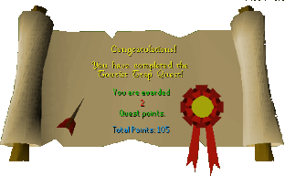

The Tourist Trap
Description: South of Al Kharid a new desert pass has opened up, leading to the dangers of the Kharid desert. Don your desert garb and make sure your waterskin is full before heading off into the trackless dunes in search of desert adventure.Difficulty: Intermediate
Length: Long
Items & Skills Needed:
- 10 Fletching
- 20 Smithing
- The ability to defeat a level 47 enemy
Recommended:
Reward: 2 Quest points, 4,650 XP in your choice of two skills (you may pick same skill twice): Agility, Fletching, Smithing, or Thieving, the ability to smith dart tips, the wrought iron key - allows access to a special door inside the Desert Mining Camp which has several higher tier ores inside - including mithril ore and adamantite ore, full slave robes, 6 bronze darts
Instructions:
Start by talking to Irena. She is found through the Shantay Pass. You can pay Shantay 5gp to buy a pass first. Then go through and speak with Irena. (Note: Shantay also sells other items you will need for this quest.)
After Irena tells you about her daughter Ana, she leaves you to find her on your own. Go south a little and examine the footsteps. They hint that you should head south (slightly west as well) to the Mining Camp. (MAKE SURE you find the Kharidian Cactus & cut them to keep water in your Waterskin[s].)
Talk to the Mercenaries around there until you get them to admit that they don't like the Captain. This will cost you 5gp per bribe. Find out that the Captain doesn't like to fight his own battles. (If you get caught, they will take you to the desert and confiscate all but one waterskin.)
Now talk to the Captain, get him roused until he tells you he will call his Guards. Pick the option about asking him to fight his own fights. Then he challenges you. Once he's dead a Metal Key will be added to your inventory. Use this to go inside with NO armor or weapons equipped! (ONCE you've killed the Captain you can come here to kill him again and get the key without all the dialogue.)
Talk to the male slave who is trying to escape. After some conversation trade clothes with him. You will have to speak to him a second time to do so. (IF you get caught inside the camp the Guards & Mercenaries may throw you in jail.) The Cell Key can be found upstairs in Captain Siad's desk.
Now with your slave outfit on go downstairs through the huge door and follow the path to the TWO Mercenaries. Talk to one and ask him to let you trade spots. He will hint at you getting a Pineapple for him first. (MAKE SURE you don't have armor or weapons on around the Mercenaries.)
Leave the camp completely. Go directly west until you find the Nomads' Camp. Talk to Al Shabim until you can ask him for a Pineapple. He will reveal the plan to get Blueprints from Captain Siad. Agree and he will give you a copy of the Chest Key. Now head back to the Mining Camp. (NOTE you can get more supplies from the nomads.)
Inside the Mining Camp go upstairs in the building to Captain Siad's room. Search his desk to find the Cell Key. Then search the bookcases until you discover books about sailing. Now talk to him.
Start with "Hello". Try to continue talking to him and then start on sailing. After a while choose the comment on his "Jib". He will then be distracted enough to unlock the Chest and get the Blueprints.
Bring these back to Al Shabim and he will ask you to make the weapon from them. Go north a bit and talk to the Bebadin Guard there. He will let you in the secret room to use the Experimental Anvil. Forge the weapon — it will be a dart tip. You may fail once or twice. Once the tip is made, use feathers with it to create a complete Experimental Dart. (Note: You may need to leave via the Shantay Pass to gather more supplies.)
Take this to Al Shabim and he will give you the Pineapple and Six Darts. You now also have the ability to make DARTS! Go back to the Mining Camp.
Go through the gates with NO Armor or Weapons equipped. Then down to the mines. Give the Pineapple to the Mercenary and go through the Mine Cave.
Close to the mine cart is a bunch of Barrels. Search an empty one and take it. Now get in the mine cart. This may take a few tries depending on your agility level. (MAKE SURE you have food because you will get hurt.)
Once the cart arrives on the other side go northwest a bit till you find a large area with many Slaves. Ana will be there. If she asks how you got in tell her the line about it being secretive. (DO NOT SAY YOU HAVE A KEY! If you do you will be rounded up. To get out you will have to mine 15 rocks and give to the Mercenary.)
After talking to Ana use the Barrel with her to "kidnap" her. Place her in the cart then get in it yourself.
On the other side search the Barrels till you find Ana. Go to the Winch Bucket and use it. The Guard there will ask to help you. Agree. Ana will start complaining but you have to cover for her. Pick the statements that will compliment the Guard. (DO NOT attempt to walk through the Mine Cave — you will be caught and severely punished.)
Leave the mines and go over to the Winch above ground. Use it and then search the Barrels for Ana. Use her on the Mine Cart and place her in it. (DO NOT try to walk through the gates — you will be caught and severely punished.)
Now say "Nice cart" to the mine cart driver and select all the lines that are friendly or funny. Some of them will be stupid. Make him laugh and he will agree to help you escape. You will have to bribe him. Pay him 100gp and he will do it. Get in the cart and he will go.
Once outside go north to Irena and talk to her.
Congratulations, Quest Complete!

This quest guide was written by imthecoolest and haxhi4life. Thanks to DRAVAN for corrections.
This quest guide was entered into the database on Wed, Jun 09, 2004, at 12:46:01 PM by DRAVAN and CJH and was last updated on Wed, Dec 01, 2004, at 11:20:10 PM by DRAVAN.